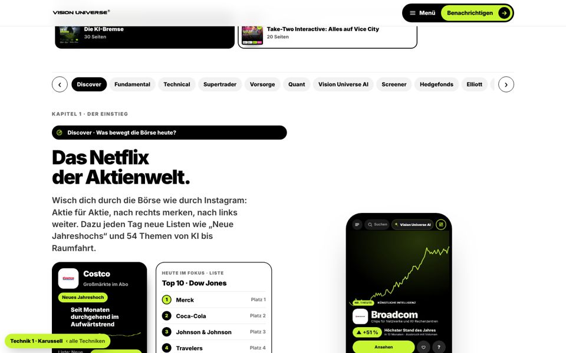
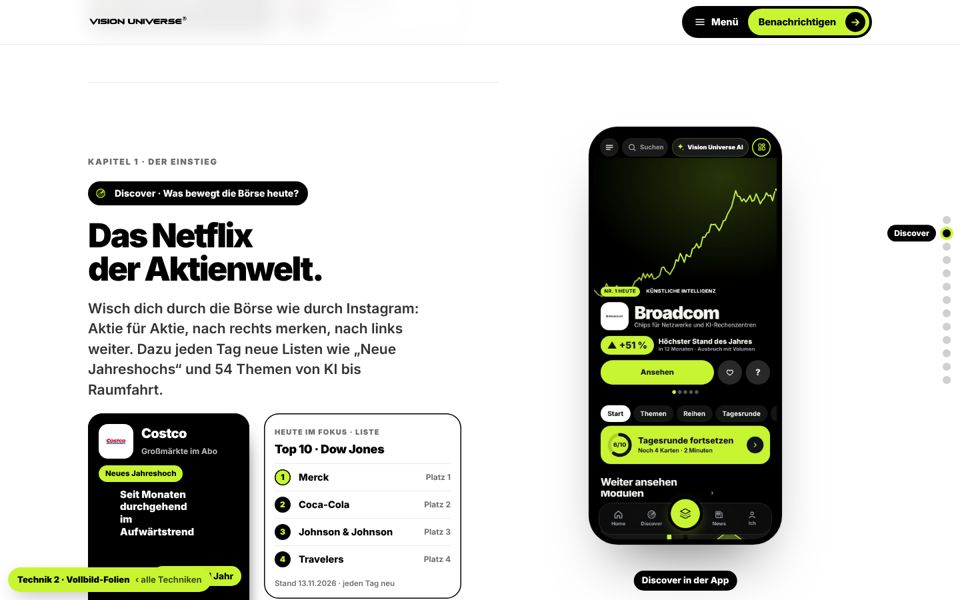
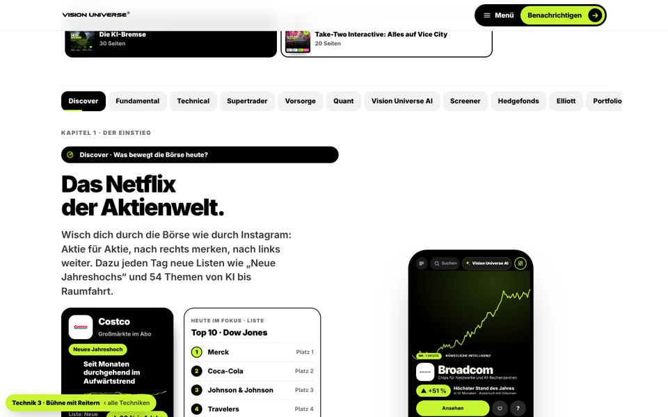
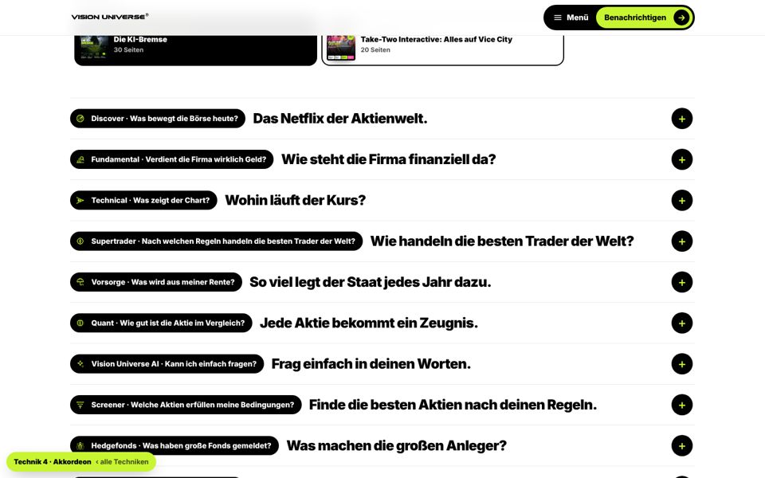
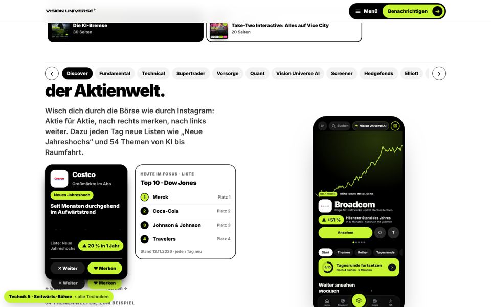

Technik-Konzepte · 19.11.2026 · nur Vorschau, nicht live
Gleiche Seite. Neue Technik.
Alle Varianten sind www.visionuniverse.de, wie sie heute live ist: dieselben Texte, Bilder, Farben, Kapitel und Filme. Geändert ist nur die Technik – wie man sich durch die Seite bewegt. Überall gleich: das Menü wie bei DLS, eine kleine schwarze Pille „Menü | Benachrichtigen“ oben rechts, die eine schwarze Karte aufklappt.
Neu: Technik wie bei DLS und Rockstar Games
Texte, Bilder und Farben sind dieselben wie live. Übernommen ist die Technik der beiden Vorbilder.
 Wie dls-consulting.deTechnik wie DLSMenü als Pille oben rechts. Riesige Überschrift mit eingebetteten App-Bildern, daneben eine laufende Liste der Bereiche. Darunter ein großer Film-Block, dann eine schwarze Bühne mit Reihen zum Wischen: Die App, die zehn Filme, die News. Jede Karte öffnet ihr Kapitel als Ebene, mit Pfeilen zum nächsten.
Wie rockstargames.comTechnik wie Rockstar GamesBildschirmfüllende Bühne, die von selbst durch Start und zehn Bereiche wechselt, mit Film, Vorschaubild, Titel und zwei Knöpfen. Unten rechts Pause und Fortschrittsbalken. Darunter die News wie der Newswire: großer Aufmacher, Liste daneben. Dann alle Bereiche als Kacheln.
Wie dls-consulting.deTechnik wie DLSMenü als Pille oben rechts. Riesige Überschrift mit eingebetteten App-Bildern, daneben eine laufende Liste der Bereiche. Darunter ein großer Film-Block, dann eine schwarze Bühne mit Reihen zum Wischen: Die App, die zehn Filme, die News. Jede Karte öffnet ihr Kapitel als Ebene, mit Pfeilen zum nächsten.
Wie rockstargames.comTechnik wie Rockstar GamesBildschirmfüllende Bühne, die von selbst durch Start und zehn Bereiche wechselt, mit Film, Vorschaubild, Titel und zwei Knöpfen. Unten rechts Pause und Fortschrittsbalken. Darunter die News wie der Newswire: großer Aufmacher, Liste daneben. Dann alle Bereiche als Kacheln.
Weitere Techniken

Technik 1 · EmpfehlungKarussellDie zwölf Kapitel liegen nebeneinander wie bei Netflix. Wischen oder Pfeile, oben eine Leiste mit allen Bereichen. Die Seite wird viel kürzer.
Technik 2Vollbild-FolienJedes Kapitel ist eine ganze Bildschirmseite und rastet beim Scrollen ein, wie eine Präsentation. Rechts Punkte zum Springen.
Technik 3Bühne mit ReiternEine feste Bühne, oben Reiter für jedes Kapitel. Es ist immer nur ein Kapitel zu sehen, die Bühne wechselt von selbst weiter.
Technik 4AkkordeonAlle Kapitel als kurze Zeilen. Ein Tipp klappt das Kapitel mit Grafik und App-Ansicht auf. Sehr aufgeräumt, alles auf einen Blick.
Technik 5 · WowSeitwärts-BühneMan scrollt normal nach unten, die Bühne bleibt stehen und die Kapitel fahren seitwärts durch – wie bei Apple-Produktseiten.Zum Vergleich: live auf www.visionuniverse.de
Frühere Varianten: S1 · S2 · S3 · S4 · S5 · L1 · L2 · L3 · L4 · L5